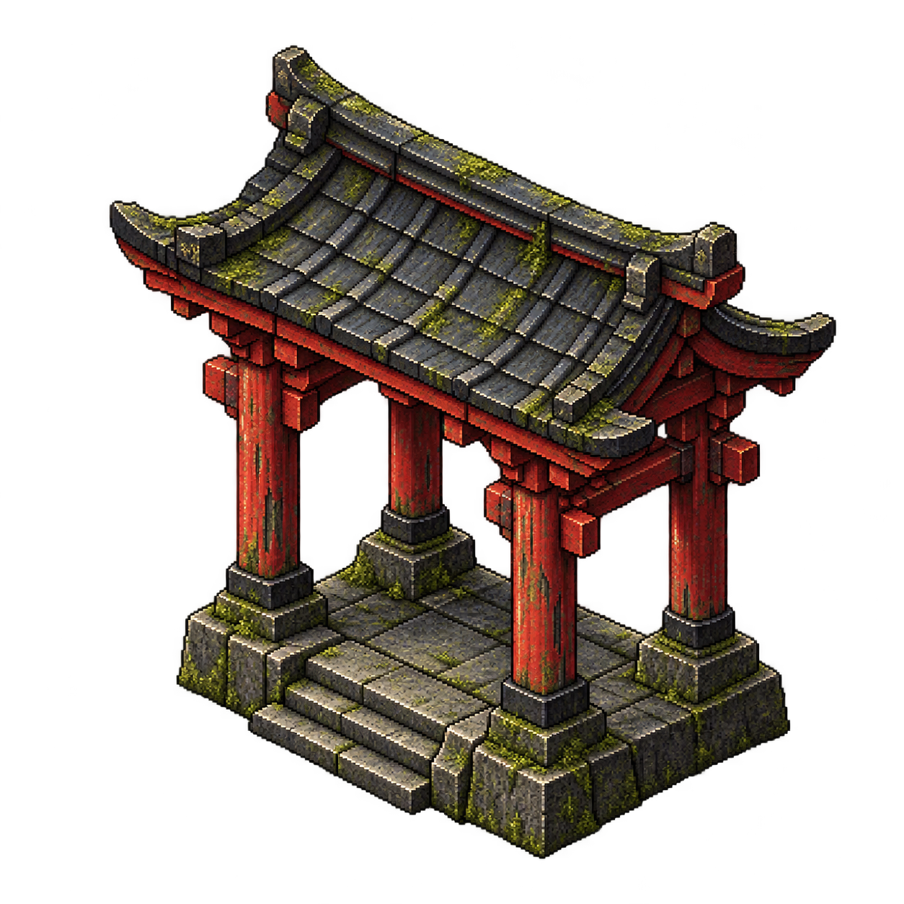
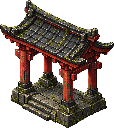
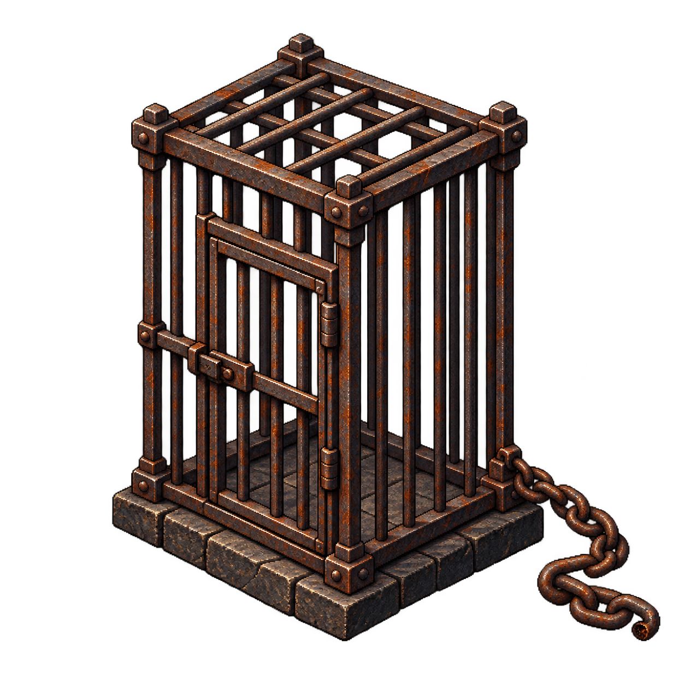
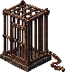
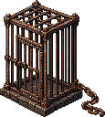
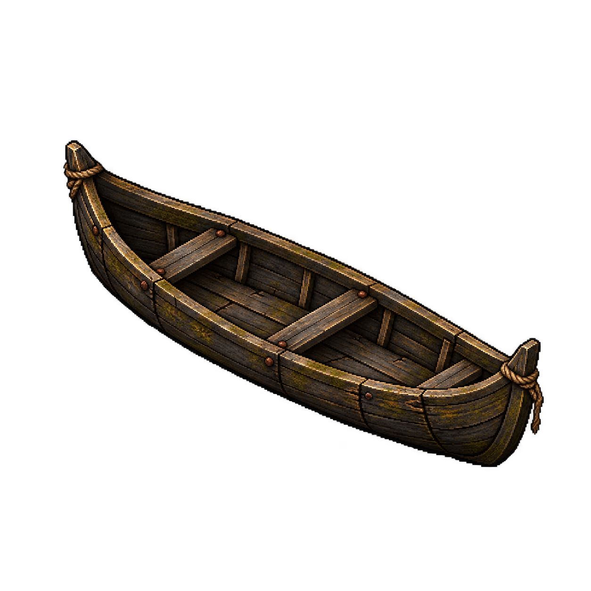
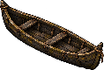
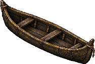
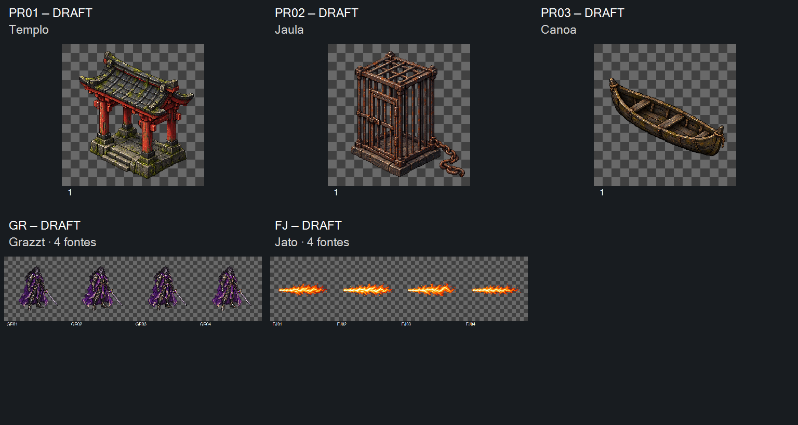

PR01 v01 — Templo-alvo

Hipótese DRAFT de entrada/pavilhão, sem símbolo religioso novo ou arquitetura canônica.
Fonte original
Leitura80/128px

Templo-alvo, jaula e canoa vazios; Graz’zt e jato em quatro arquivos individuais cada. Todos1254×1254, sem grade para recortar. Doze tentativas preservadas; GR02 v02 é a revisão selecionada. Direção visual aguardando aceite do dono.
Manifesto · Medições e hashes · Prompts usados · Entrega local para Claude · Checagem dos controles
Candidatas de reparo: os novos quadros não encostam nas bordas e as espadas estão inteiras. Isso não libera automaticamente as retenções antigas NE06/FC02: falta avaliar identidade, ciclo e registro. Alfa dos sólidos252–253, resíduos baixos e margens dos props ainda exigem preparação. Nenhuma admissão em jogo.

Hipótese DRAFT de entrada/pavilhão, sem símbolo religioso novo ou arquitetura canônica.
Fonte original

Porta fechada, sem prisioneiro. Transparência entre barras inspecionada, com resíduos de alfa baixo; layers e oclusão não definidos.
Fonte original


Casco inteiro, bancos e amarração simples. Sem rio, passageiro ou animação de travessia.
Fonte original


Repetição padrão, pausa/reinício/quadro manual/FPS para inspecionar.8FPS não é duração aprovada de runtime. Prévia usa pixels das fontes nativas sem alinhamento oculto. Graz’zt: variação inferior do contorno1px. Jato: origem interna próxima, ponta varia entre fases; coordenadas geométricas são propostas para confirmação, não pivô semântico certificado.
Checkpoint: aceite conjunto ou por entrada/revisão. Preparação e implementação com Claude. Lógica conferida em DOM offline; render real do navegador e jogo não verificados. Nenhum playtest realizado. Sem alteração automática de fontes anteriores.